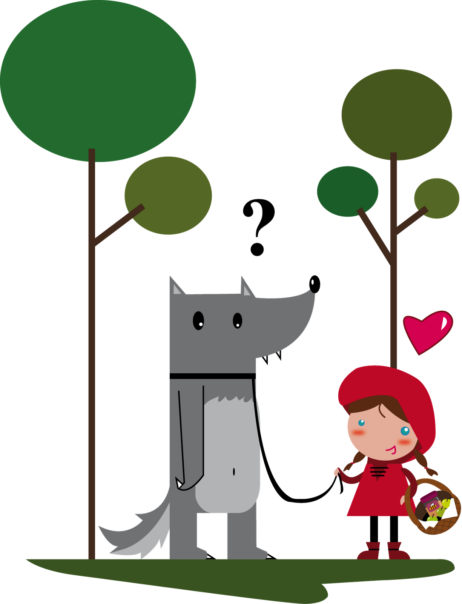
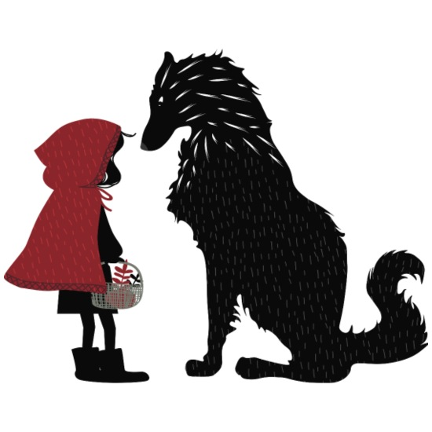

El bosque era mi hogar. Yo vivía allí y me gustaba mucho. Siempre trataba de mantenerlo ordenado y limpio.
Un día soleado, mientras estaba recogiendo las basuras dejadas por unos turistas sentí pasos. Me escondí detrás de un árbol y vi venir una niña vestida en una forma muy divertida: toda de rojo y su cabeza cubierta, como si no quisieran que la vean. Andaba feliz y comenzó a cortar las flores de nuestro bosque, sin pedir permiso a nadie, quizás ni se le ocurrió que estas flores no le pertenecían. Naturalmente, me puse a investigar. Le pregunte quien era, de donde venia, a donde iba, a lo que ella me contesto, cantando y bailando, que iba a casa de su abuelita con una canasta para el almuerzo.
Me pareció una persona honesta, pero estaba en mi bosque cortando flores. De repente, sin ningún remordimiento, mató a un mosquito que volaba libremente, pues también el bosque era para el. Así que decidí darle una lección y enseñarle lo serio que es meterse en el bosque sin anunciarse antes y comenzar a maltratar a sus habitantes.
La dejé seguir su camino y corrí a la casa de la abuelita. Cuando llegue me abrió la puerta una simpática viejecita, le expliqué la situación. Y ella estuvo de acuerdo en que su nieta merecía una lección. La abuelita aceptó permanecer fuera de la vista hasta que yo la llamara y se escondió debajo de la cama.
Cuando llegó la niña la invite a entrar al dormitorio donde yo estaba acostado vestido con la ropa de la abuelita. La niña llegó sonrojada, y me dijo algo desagradable acerca de mis grandes orejas. He sido insultado antes, así que traté de ser amable y le dije que mis grandes orejas eran par oírla mejor.
Ahora bien me agradaba la niña y traté de prestarle atención, pero ella hizo otra observación insultante acerca de mis ojos saltones. Ustedes comprenderán que empecé a sentirme enojado. La niña tenía bonita apariencia pero empezaba a serme antipática. Sin embargo pensé que debía poner la otra mejilla y le dije que mis ojos me ayudaban para verla mejor. Pero su siguiente insulto sí me encolerizo. Siempre he tenido problemas con mis grandes y feos dientes y esa niña hizo un comentario realmente grosero.
Se que debí haberme controlado pero salté de la cama y le gruñí, enseñándole toda mi dentadura y diciéndole que eran así de grande para comerla mejor. Ahora, piensen Uds.: ningún lobo puede comerse a una niña. Todo el mundo lo sabe. Pero esa niña empezó a correr por toda la habitación gritando y yo corría atrás de ella tratando de calmarla. Como tenía puesta la ropa de la abuelita y me molestaba para correr, me la quité pero fue mucho peor. La niña gritó aun más. De repente la puerta se abrió y apareció un leñador con un hacha enorme y afilada. Yo lo mire y comprendí que corría peligro así que salté por la ventana y escapé.
Me gustaría decirles que este es el final del cuento, pero desgraciadamente no es así. La abuelita jamás contó mi parte de la historia y no pasó mucho tiempo sin que se corriera la voz que yo era un lobo malo y peligroso. Todo el mundo comenzó a evitarme.
No se que le pasaría a esa niña antipática y vestida en forma tan rara, pero si les puedo decir que yo nunca pude contar mi versión. Ahora Ustedes ya lo saben.
Espero que les haya gustado